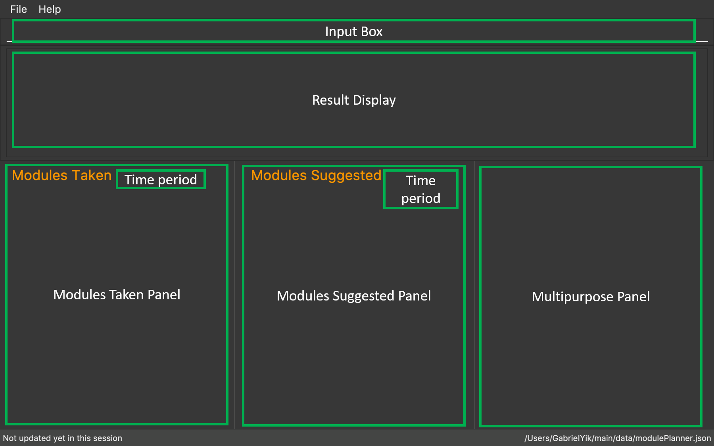

By: Team T16-4 Since: Sept 2018 Licence: MIT
- 1. Introduction
- 2. Quick Start
- 3. Features
- 3.1. Viewing help :
help - 3.2. Setting user profile :
setup - 3.3. Adding modules:
add - 3.4. Deleting modules :
delete - 3.5. Finding information on a module :
find - 3.6. Going to a different year and semester :
goto - 3.7. Listing modules :
list - 3.8. Getting status update :
status - 3.9. Suggesting modules :
suggest - 3.10. Undoing previous command :
undo - 3.11. Redoing the previously undone command :
redo - 3.12. Clearing all modules :
clear - 3.13. Exiting the program :
exit - 3.14. Saving the data
- 3.1. Viewing help :
- 4. FAQ
- 5. Command Summary
1. Introduction
Module Planner is for NUS Computer Science undergraduate students who prefer to use a desktop app to keep track of past modules and list possible future modules based on the academic requirements. More importantly, Module Planner is optimized for those who prefer to work with a Command Line Interface (CLI) while still having the benefits of a Graphical User Interface (GUI). If you can type fast, Module Planner can get your module planning tasks done faster than traditional GUI apps. Interested? Jump to the Section 2, “Quick Start” to get started. Enjoy!
2. Quick Start
-
Ensure you have Java version
9or later installed in your Computer. -
Download the latest
moduleplanner.jarhere. -
Copy the file to the folder you want to use as the home folder for your Module Planner.
-
Double-click the file to start the app. The GUI should appear in a few seconds.
-
The first page you will see when Module Planner starts up image::Ui.png[width="790"]
-
The page is divided into several sections.
Figure 1. The labelled page-
Input Box: input commands here.
-
Result Display: displays command results and other associated messages.
-
Time Period: displays the year and semester you are currently viewing.
-
Taken Modules Panel: lists modules that you put into the specified time period.
-
Suggested Modules Panel: lists modules that suggested to you for that time period.
-
Multipurpose Panel: displays results for the
FindandStatuscommands.
-
-
Type the command in the command box and press Enter to execute it.
e.g. typinghelpand pressing Enter will open the help window. -
Some example commands you can try:
-
setupm/Computer Science: set your major to be Computer Science in Module Planner to get tailored module suggestion for Computer Science student. -
suggesty/1 s/1: suggest modules you can take in first year, semester 1. -
addy/1 s/1 c/CS1231 c/MA1521: adds modules CS1231 and MA1521 to the year 1 semester 1 modules list. -
deletec/CS1231: deletes module CS1231 from the Module Planner. -
exit: exits the app
-
-
Refer to Section 3, “Features” for details of each command.
3. Features
Command Format
-
Words in
UPPER_CASEare the parameters that you can supply, e.g. insuggest y/YEAR s/SEMESTER,YEARandSEMESTERare parameters which can be used assuggest y/1 s/1. -
Items in square brackets are optional e.g
setup … [f/FOCUS_AREA]can be used assetup … f/software engineeringor assetup …. -
Items with
…after them can be used multiple times including zero times e.g.MODULE_CODE…can be used asCS1231,CS1231 MA1521etc.
Fields restrictions
MAJOR |
|
FOCUS_AREA |
|
MODULE_CODE |
Must be a valid NUS module code in Academic Year 18/19. |
YEAR |
Should only be integer from |
SEMESTER |
Should only be integer from |
3.2. Setting user profile : setup
Initialises your profile with your major and optionally your focus areas so that Module Planner can
give you module suggestion that is more relevant to you.
Format: setup m/MAJOR [f/FOCUS_AREA]…
Examples:
-
setup m/Computer Engineering -
setup m/Computer Science f/Software Engineering
3.3. Adding modules: add
Adds the specified modules to the list of modules that you have taken or want to take for the specified year and semester.
Format: add y/YEAR s/SEMESTER c/MODULE_CODE…
| You can add 1 or more modules. |
Examples:
-
add y/1 s/1 c/MA1101R -
add y/1 s/1 c/CS1231 c/CS1101S
3.4. Deleting modules : delete
Deletes the specified modules from list of current or future modules for the specified year and semester.
Format: delete c/MODULE_CODE…
Examples:
-
delete c/CS1010 -
delete c/CS1231 c/MA1521
Consider a module planner stocked with the modules CS1010 and CS1231 in year 1 semester 1, and the modules CS2030
and CS2040 in year 1 semester 2. If delete c/CS1010 is executed, CS1010 is removed, as well as the modules CS2030
and CS2040 in year 1 semester 2 since they have CS1010 as a prerequisite.
You can see the change in the Taken Modules Panel in the before and after images.
Before |
After |
|

3.5. Finding information on a module : find
Retrieves the information of the specified module.
Format: find c/MODULE_CODE
Example:
-
find c/CS1010
You should see the module information for CS1010 in the Multipurpose Panel.

3.6. Going to a different year and semester : goto
Changes the view to the specified year and semester.
Format: goto y/YEAR s/SEMESTER
Example:
-
goto y/1 s/1
The change can be seen in Taken Modules Panel in the before and after images.
Before |
After |
3.7. Listing modules : list
If a valid year is supplied, shows a list of all modules that you have added to that year. Otherwise, shows a list of all modules that you have added to every year.
Format: list [y/YEAR]
|
|
Examples:
-
list y/1
Lists all modules taken in year 1, both semester 1 and 2 (if they exist). -
list
Lists all modules taken in every year, from year 1 semester 1 to year 4 semester 2 (if they exist).
3.8. Getting status update : status
Shows how many core, unrestricted electives, and general education modules that you have taken and how many more you need to take.
Format: status
3.9. Suggesting modules : suggest
If a valid year and semester are supplied, suggests a list of modules that you are available to take in the specified year and semester, based on modules that you have added. A module is available for you if:
-
You have fulfilled (added to ModulePlanner) all the prerequisites of the module in the semester(s) prior to the one you specified.
-
You have not fulfilled (added to ModulePlanner) any preclusions to the module in any semester (including semester after the one you specified).
-
You have not fulfilled (added to ModulePlanner) the module in any semester (including semester after the one you specified).
The list of modules is sorted, with core modules being on top, followed by general education modules and unrestricted electives modules.
Format: suggest y/YEAR s/SEMESTER
|
|
Examples:
-
suggest y/1 s/1
3.10. Undoing previous command : undo
Restores Module Planner to the state before the previous undoable command was executed.
Format: undo
|
Undoable commands: those commands that modify the Module Planner’s content ( |
Examples:
-
delete c/CS1010
list
undo(reverses thedelete c/CS1010command) -
goto y/1 s/1
list
undo
Theundocommand fails as there are no undoable commands executed previously. -
delete c/CS1010
clear
undo(reverses theclearcommand)
undo(reverses thedelete c/CS1010command)
3.11. Redoing the previously undone command : redo
Reverses the most recent undo command.
Format: redo
Examples:
-
delete c/CS1010
undo(reverses thedelete c/CS1010command)
redo(reapplies thedelete c/CS1010command) -
delete c/CS1010
redo
Theredocommand fails as there are noundocommands executed previously. -
delete c/CS1010
clear
undo(reverses theclearcommand)
undo(reverses thedelete c/CS1010command)
redo(reapplies thedelete c/CS1010command)
redo(reapplies theclearcommand)
3.12. Clearing all modules : clear
Clears all modules added into Module Planner and the module suggestion.
Format: clear
3.13. Exiting the program : exit
Format: exit
3.14. Saving the data
Module Planner data are saved in the hard disk automatically after any command that changes the data.
There is no need to save manually.
4. FAQ
Q: How do I transfer my data to another Computer?
A: Install the app in the other computer and overwrite the empty data file it creates with the file that contains the data of your previous Module Planner folder.
5. Command Summary
-
Add
add y/YEAR s/SEMESTER c/MODULE_CODE…
e.g.add y/1 s/1 c/CS1231 c/CS1101S -
Clear :
clear -
Delete :
delete c/MODULE_CODE…
e.g.delete c/CS1231 c/MA1521 -
Find :
find c/MODULE_CODE
e.g.find c/CS1O10 -
Goto :
goto y/YEAR s/SEMESTER
e.g.goto y/1 s/1 -
List :
list [y/YEAR]
e.g.list y/1 -
Setup :
setup y/YEAR s/SEMESTER m/MAJOR [f/FOCUS_AREA]
e.g.setup y/1 s/1 m/computer science f/machine learning -
Status :
status -
Suggest :
suggest y/YEAR s/SEMESTER
e.g.suggest y/1 s/1 -
Help :
help -
History :
history -
Undo :
undo -
Redo :
redo -
Exit :
exit